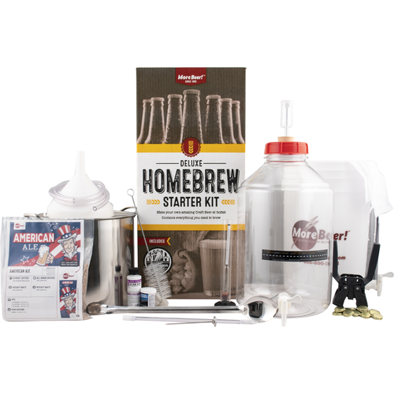
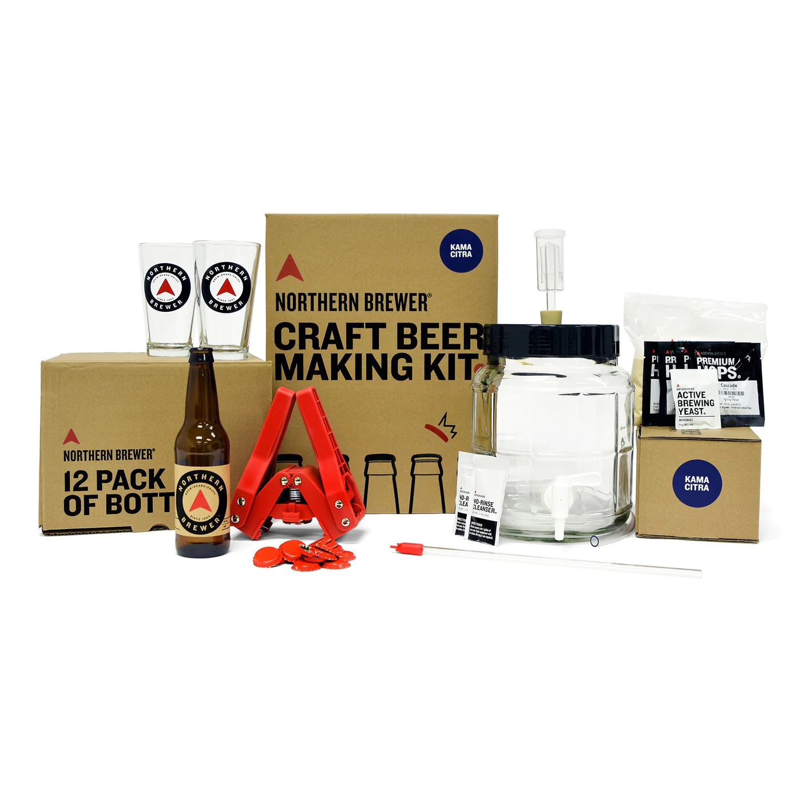
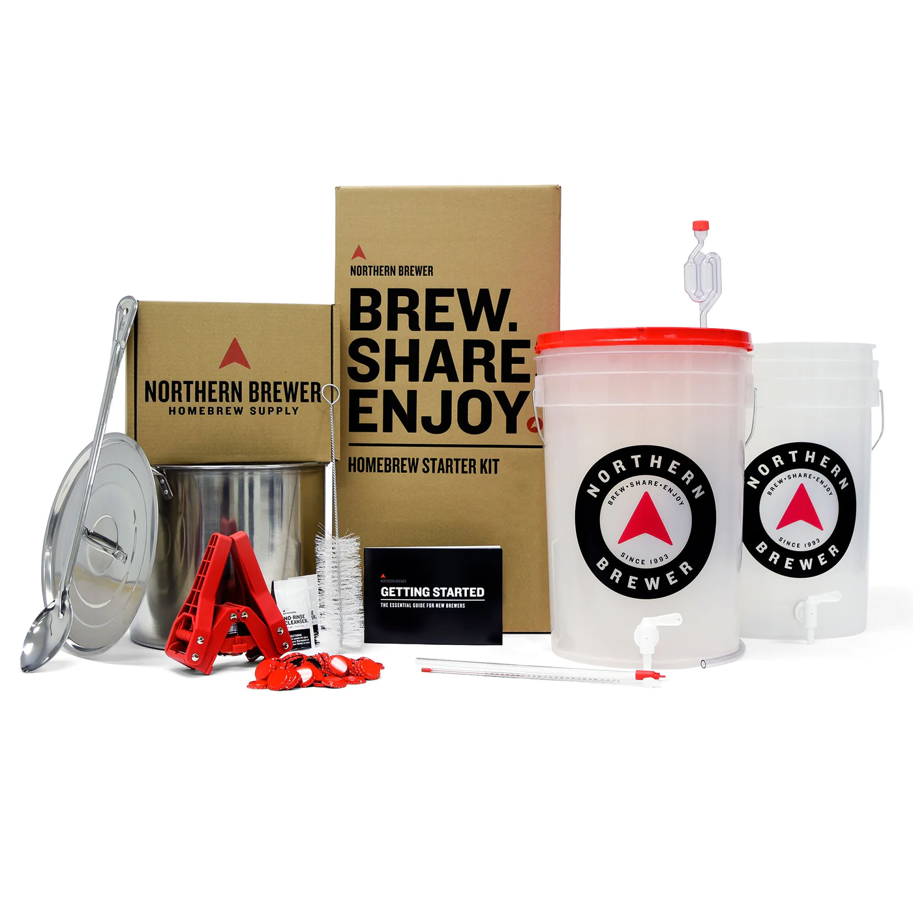
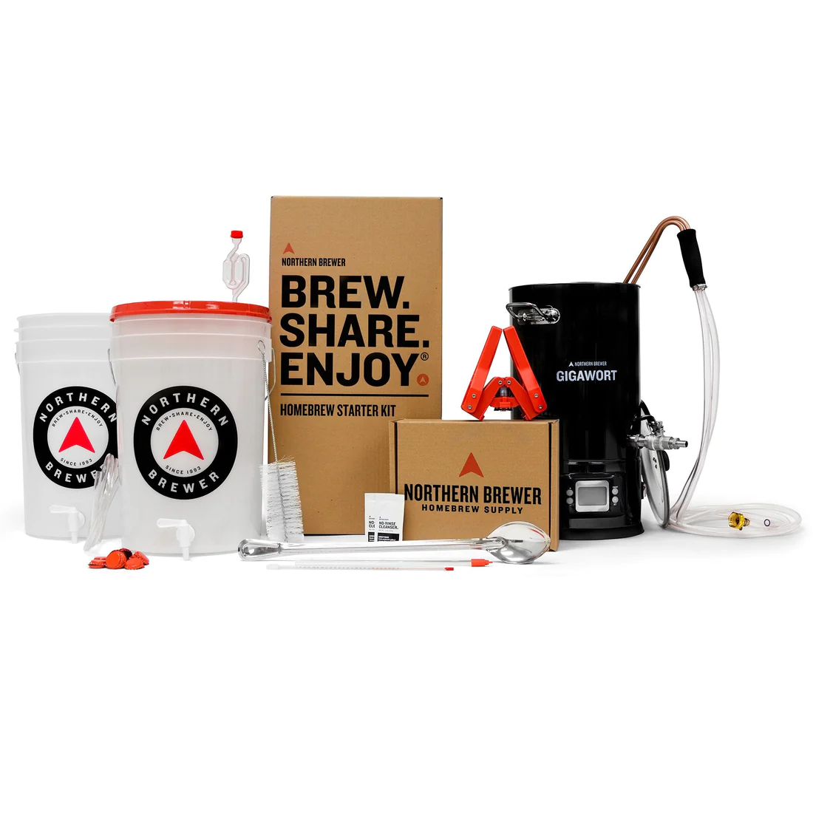
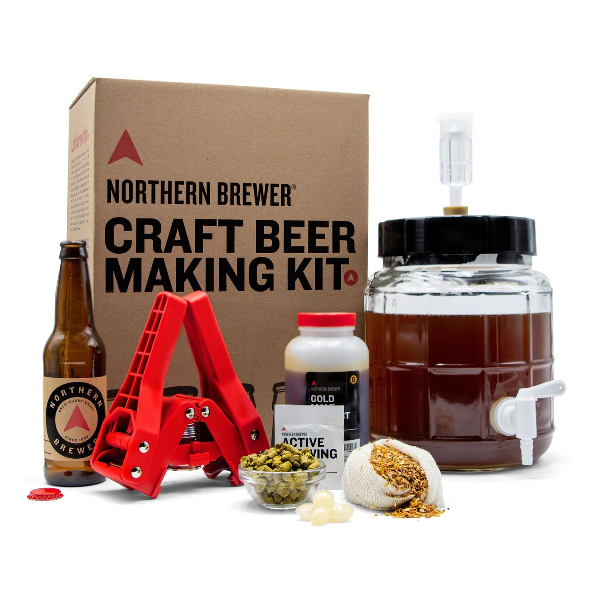

Brew City Recommendations
Below you will find all of Brew City's best recommendations in regards to home brew making.
The lists include the top 5 stater kits, a great place for a first timer to begin their journey into brew making.
Along with the starter kits, you will also find the top 5 places to get recipes and ingredients.
Top 5 Starter Kits
- Deluxe Homebrewing Starter Kit - MoreBeer!
- Craft Beer Making Gift Set - Northern Brewer
- Brew Share Enjoy Homebrew Starter Kit - Northern Brewer
- Electric Brew Share Enjoy Homebrew Starter Kit - Austin Homebrew Supply
- Craft Beer Making Kit With Siphonless Fermenter - 1 Gallon - Midwest Supplies